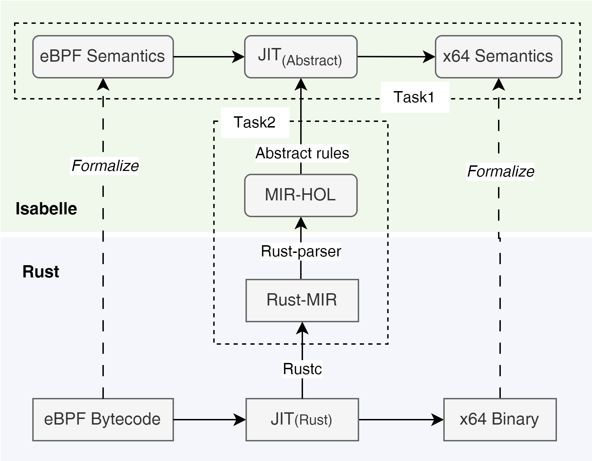

Research project
End-to-end formal verification of the Solana eBPF JIT compiler
Connecting the Rust JIT implementation with formal models of eBPF and x86-64 to study end-to-end compiler correctness.
Overview
This project studies the end-to-end formal verification of the Solana eBPF JIT compiler, from source bytecode through its Rust implementation to the generated x86-64 binary. The workflow connects eBPF and x86-64 semantics with an abstract JIT model in Isabelle/HOL, and links the Rust implementation to that model through Rust MIR and MIR-HOL.


Our Solana verification work is part of TRust2, a project on formal verification of Rust, with the Solana eBPF virtual machine serving as a real-world Rust case study.
Supported by the 2024 CCF–Huawei Populus Grove Fund, Formal Method Track (announcement in Chinese).